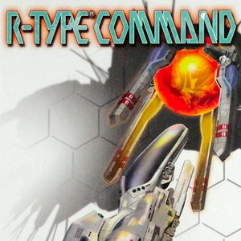

 R-Type Tactics
Details
| Playtime | Not Played |
| Last Activity | Never |
| Added | 21/02/2024 3:22:45 |
| Modified | 20/05/2024 22:32:56 |
| Completion Status | Not Played |
| Library | Playnite |
| Source | |
| Platform | Sony PlayStation Portable |
| Release Date | 20/09/2007 |
| Community Score | |
| Critic Score | 69 |
| User Score | 0 |
| Genre | Turn-based strategy (TBS) |
| Developer | Irem |
| Publisher | Atlus Irem Rising Star Games |
| Feature | Multiplayer Single Player |
| Links | |
| Tag | |
Description
R-Type Tactics (アール・タイプ タクティクス, Āru Taipu Takutikusu), known in North America as R-Type Command, is a turn-based strategy/tactical role-playing game released in 2007 in Japan, and 2008 in North America and Europe for PlayStation Portable. The main part of the game consists of two consecutive campaigns, in which the player controls first the forces of Earth, then the Bydo Empire. The gameplay is structured as a typical mission-based tactical role-playing game, but retains many of the specific traits of the R-Type series. The game also supports multiplayer combat via Wi-Fi.
The game received mixed reviews from critics. A sequel, R-Type Tactics II: Operation Bitter Chocolate, was released in 2009 exclusively in Japan. A remake of both games, R-Type Tactics I • II Cosmos, is in development at Granzella. It's set to be released in 2024 for Nintendo Switch, PlayStation 4, PlayStation 5, Windows, and Xbox Series X/S.
Gameplay
R-Type Tactics has 58 levels, through which the player navigates an army of R-Type space fighters and support units, fighting the enemy forces of the Bydo.
The side-scrolling nature of the R-Type series is preserved in R-Type Tactics. Most levels are structured as in a side-scrolling shooter, with the player's units and the objective on opposite sides of the field. Units cannot change facing, which has an important impact on gameplay, as certain attacks can only be performed in one direction. Like other turn-based strategy games, the playing field is also divided into hexagons with varying effects.
Units
R-Type Tactics features the opposing armies of the Earth Space Corps and the Bydo. The player can access more than 100 different units, including many of the R-series fighters from the other R-Type games. Each fighter has unique abilities such as sub-space movement and a distinct set of attacks. During the game, the player acquires abilities enabling new units and upgrades to existing units to be purchased for their army. Furthermore, new units can be acquired by capturing certain objectives in levels, such as derelict space stations and starbases.
Support units range from large carrier ships to maintenance units as well as the Force units, well known from other games in the R-Type series.
Force units can either be controlled separately or they can be attached to the R-series fighters. Attached Forces function as a unidirectional shield while providing the fighter with stronger attacks. When not attached, a Force is an independent unit that can be used as a tank.
As in other R-Type titles, the TP-02C POW armor functions as a supply unit. It is also used for capturing in-game locations such as space stations.
The Rr2o-3 has a similar function to the TP-02C but has the added ability to repair friendly units or to mine asteroids for minerals called Solonium, Etherium, and Bydogen which are needed in the production of new units, especially Forces. Certain units on the human side can also extract Bydogen from Bydo units.
Plot
The game's narrative is viewed from the perspective of the player-character, who's an officer in Earth's defense forces, called the Space Corps, in the year MC 0065. Various entries in a journal also flesh out the plot.
- Space Corps
In the initial single-player campaign, the player is freshly commissioned into the Space Corps, which is steadily losing engagements against an alien race called the Bydo. After completing initial training, the player is ordered to investigate an outpost in Mars that has reportedly lost contact. As the Space Corps fleet advances outside the Solar System, the player is able to recruit more pilots. Through a warp-gate station outside Pluto, the player's fleet travels through a hyperspace warp called the Tesseract to the Bydo's star system.
In the final battle located in the Bydo homeworld, the player encounters remains of Space Corps ships that were defeated in previous campaigns. The player eventually defeats the Bydo's core but it is a Pyrrhic victory, as the core opens a black hole that grapples the entire fleet and assimilates them in a large surge of slime. Completing this campaign would unlock the Bydo campaign.
- Bydo Empire
As the Bydo campaign begins, the player-character awakens from a deep slumber, now absorbed as one of the aliens. As the player fights their way out of the Bydo star system, this time against their old comrades in the Space Corps, they begin to further understand the origins of the Bydo.
However, despite fighting all the way to Earth and defeating the Space Corps' home defense forces, the player-character is forced to admit that despite being from Earth, the fact that they are in a Bydo fleet means they are no longer welcome. The ending video shows the Bydo forces escaping Earth in the midst of a fierce Space Corps counterattack.
Release
Demo version
A demo version was included with Famitsu PSP Vol.8. It includes Mission A-1, A-2, B stages. In addition, a demo is available for download on the NTSC-U region on the PlayStation Network.
Full version
The Japanese version of the game, R-Type Tactics, was released on September 26, 2007.
Pre-orders for the North American version of the game featured a small black pre-painted gashapon model of the R-9A Arrowhead fighter which required some assembly. Made by gashapon company Yujin, the kit had the fighter itself, the Force system and bits, plus a display stand.
Toys
Toy manufacturer A-Label also released standard and black versions of the R-9A Arrowhead as part of its "Madou Gokin" line. Only 2,000 copies of the standard version were produced, while a Benables custom red version is also available. An Rwf-9D Shooting Star fighter was released in March 2011.
Reception
The game received above-average reviews. At the high end, Destructoid gave the game an 85% score, stating that the learning curve is not that steep and the various R-type homages are a plus, while the loss of a reconnaissance unit could make or break the game. GameSpot's 7.0 rating was attributed to the game offering a chance to play massive fleets but the loading times and the repetitive cutscenes were a drag.
Sequel
A sequel, R-Type Tactics II: Operation Bitter Chocolate was released for the PSP and PSPgo on December 10, 2009 in Japan in both retail and download forms.